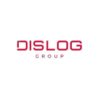
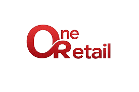
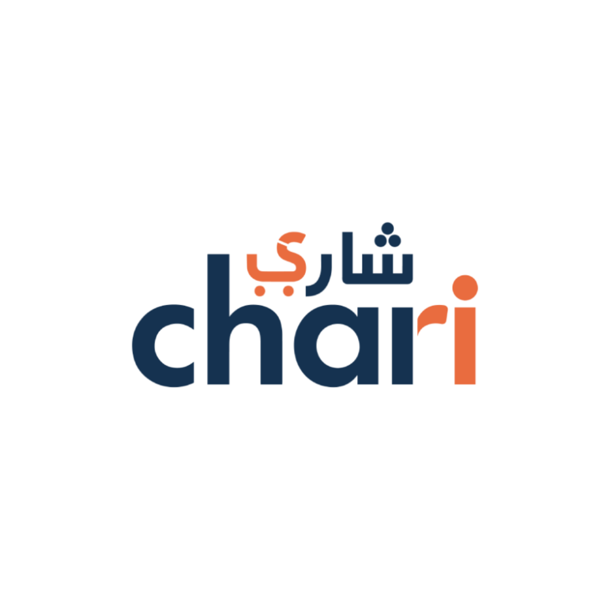
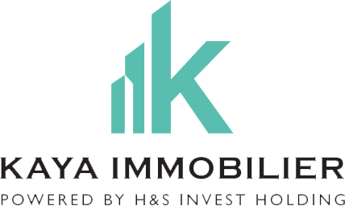

Vision 2026–2028
Transformer le groupe H&S en
organisation pilotée par la donnée
La Data et l'IA ne sont pas un sujet IT. Ce sont des leviers de pilotage, de marge, de cash, de croissance et d'IPO readiness — structurés, priorisés et actionnables.
0
Use cases visibles
0
Entités visibles
0
Lots visibles
—
Horizon affiché




Lisibilité
Rendre le groupe plus lisible et comparable à travers une donnée unifiée et fiable.
Performance
Automatiser les tâches à faible valeur, libérer les équipes pour la prise de décision.
Intégration
Créer une plateforme data groupe capable d'absorber des acquisitions M&A rapidement.
IPO Readiness
Construire une gouvernance data solide et un P&L consolidé digne d'une entreprise cotée.
🗂 Explorateur
🗺 Roadmap
👥 Modèle opérationnel
Résultats :
24 use cases
Roadmap interactive — 3 lots
Chaque lot représente une phase de transformation. Cliquez sur un sujet pour obtenir son détail complet.
Répartition par lot
Répartition par dimension
Stack cible prioritaire


Équipe Data Office
Structure cible recommandée
Head of Data
Pilotage stratégique & gouvernance
Lead Data / Strategy
Coordination use cases & roadmap
Data Engineers (×3)
Architecture, pipelines, lake/DWH
Analytics / BI (×2)
Dashboards, datamarts, Power BI
Data Product Owner
Liason métiers / delivery
ML Engineer / AI
Modèles, scoring, agents IA
Budget & Investissement
Répartition indicative progressive
Entités & Maturité Data
Niveau de maturité et priorité par verticale
Dislog
Distribution nationale — Priorité IPO & Finance
5 use cases
One Retail
Réseau retail — Priorité pilotage magasin & stock
4 use cases
LVE / Logistique
Transport & messagerie — Priorité performance opérationnelle
4 use cases
WB Media
Media & publicité — Priorité ROI & rentabilité client
3 use cases
Chari
B2B e-commerce — Priorité LTV & risque crédit
3 use cases
Kaya Immobilier
Promotion immobilière — Priorité cashflow & budget
3 use cases
Fonctions Transverses
RH, ESG, M&A, Finance & IPO
2 use cases